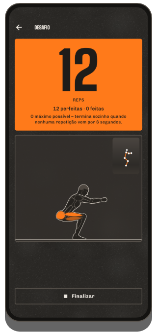
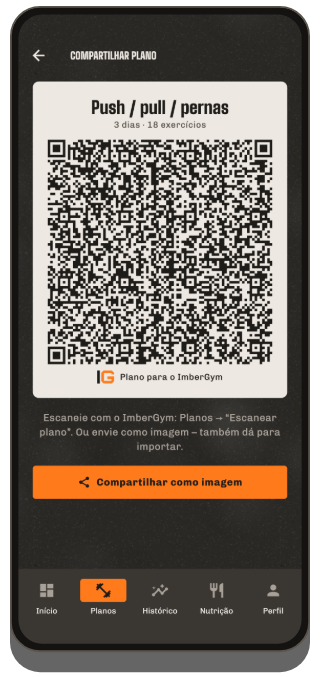

Treine.
Registre.
Evolua.
O ImberGym é seu diário de treino para academia, casa e ao ar livre: planos, exercícios animados, recordes e estatísticas, além de percursos GPS com Trackshow, nutrição e suplementos. Sem conta, sem nuvem: seus dados ficam no seu celular.

O que o ImberGym faz
Planos e modelos
Seus próprios planos com sessões, séries, repetições e descanso, ou modelos prontos: do full body para iniciantes ao push/pull/pernas, calistenia e yoga. Duração estimada ao vivo para cada sessão.
Compartilhar planos por QR code
O plano inteiro cabe num QR code: seu parceiro de treino escaneia e já tem na hora. Sem servidor, sem conta.
Treino em andamento
Um exercício por página, os últimos valores preenchidos, sugestões de progressão, bi-sets, ajustes dos aparelhos salvos. Timer de descanso também na tela de bloqueio: pode ser desativado, com o sinal que você escolher (gongo, sino, apito…) e vibração opcional.
Exercícios animados
Cada um dos 259 exercícios mostra o movimento com uma figura, os músculos trabalhados, o ritmo e dicas de técnica.
Recordes
Peso máximo, 1RM estimado, volume, repetições, distância e ritmo: “Novo recorde!” logo depois da série.
Estatísticas e mapa corporal
Semana, mês ou 3 meses com a variação, distribuição por grupo muscular, mapa corporal com recuperação, evolução por exercício e resumos semanais e anuais para compartilhar. Todos os treinos por mês, filtráveis por plano e exercício.
Frequência cardíaca do relógio e da cinta
O ImberGym busca a frequência cardíaca do seu relógio para cada treino via Health Connect. Com uma cinta peitoral Bluetooth você vê ao vivo durante o treino, com zonas cardíacas e descanso pela frequência.
Várias academias
Adicione os lugares onde você treina: o ImberGym reconhece onde você está ao começar e mostra a academia no histórico e na agenda.
Corpo
Peso e gordura corporal com média de 7 dias, também direto da sua balança via Health Connect. Fotos de progresso com sobreposição para a mesma pose e comparação antes/depois; as fotos ficam dentro do app.
Nutrição
Mais de 1.200 alimentos offline, registrados com um toque. Leitor de código de barras (Open Food Facts), receitas com cálculo de porções e meta de calorias dinâmica conforme sua atividade, se quiser. Pode ser desativada por completo.
Suplementos
Seus próprios produtos com quantidade habitual, botão “Tomado”, calendário e lembretes nos dias que você escolher, sem sugestões de dosagem.
Agenda, backup e importação
Treinos na agenda do aparelho, se quiser. Backup para trocar de celular, importação do Strong e do Hevy, exportação CSV.
Tabata e intervalos
Tabata, HIIT, 30/30 ou EMOM: como início rápido ou como bloco no seu plano. Contagem regressiva grande e aviso antes de cada troca, mesmo com o celular bloqueado.
O ImberGym por dentro







Ao ar livre
Gravação GPS
Corrida, bike, trilha: distância, ritmo ou velocidade e elevação pelo barômetro. Continua gravando com a tela desligada, pausa nos semáforos e retoma sozinha depois de uma parada.
Trackshow
Seu percurso como um voo de câmera sobre curvas de nível, com destaques como o trecho mais íngreme, o ponto mais alto e o quilômetro mais rápido, para compartilhar como imagem de stories ou vídeo.
Exportação GPX
Cada gravação pode ser exportada como arquivo GPX e aberta em outros apps.
Grátis e Premium
Grátis
- Treinos completos com timer de descanso
- Até 5 planos e 5 exercícios próprios, todos os modelos
- Biblioteca de exercícios com animações
- Histórico, recordes, estatísticas, resumo semanal e anual
- Frequência cardíaca do relógio via Health Connect, cinta peitoral ao vivo com zonas e descanso pela frequência
- Suplementos com lembretes, desafio com contador de repetições pela câmera
- Contador de calorias com catálogo de alimentos e código de barras, peso
- Passar planos por QR code, compartilhar treinos como card
Premium
- Planos e exercícios próprios ilimitados, importar planos por QR code
- Mapa corporal, recuperação, evolução de gordura corporal e peso
- Treino intervalado (Tabata e mais)
- Ao ar livre com GPS, Trackshow em vídeo
- App para o relógio (Wear OS)
- Academias, carteirinhas, fotos de progresso
- Todas as receitas, meta de calorias dinâmica
Assinatura mensal ou anual, ou um pagamento único vitalício, pelo Google Play – os preços em reais aparecem no app. Teste grátis por 7 dias depois do primeiro treino.
Perguntas frequentes
Preciso de uma conta?
Não. O ImberGym funciona sem cadastro e sem servidor próprio.
Onde ficam meus dados?
Só no seu celular. Sem nuvem, sem publicidade, sem análise. Mais detalhes na política de privacidade.
O app funciona offline?
Sim. Só duas coisas usam a internet: a busca de um código de barras desconhecido no Open Food Facts e o nome do local de um percurso GPS (para isso o ponto de partida é enviado ao serviço de localização do Android). Todo o resto funciona offline.
Como a frequência cardíaca do meu relógio chega ao ImberGym?
Pelo Health Connect, o armazenamento de dados de saúde do Android. No app do seu relógio, ative o Health Connect e permita “Frequência cardíaca”: Samsung Health, Garmin Connect, Fitbit, Polar Flow, Withings e Zepp (Amazfit), entre outros, fazem isso. Depois toque em “Carregar FC do relógio” nos detalhes do treino no ImberGym. Huawei: o Huawei Health não grava no Health Connect; o app “Health Sync” (Play Store) pode transferir os dados: origem Huawei Health, destino Health Connect, selecione “Frequência cardíaca”. Dica: inicie também um treino no relógio para ele medir continuamente.
Quais cintas peitorais funcionam?
Qualquer cinta peitoral Bluetooth com o perfil padrão de frequência cardíaca, por ex. Polar H9/H10, Garmin HRM-Dual ou Wahoo TICKR. Pareie uma vez no perfil, em “Cinta cardíaca e zonas”: depois ela se conecta sozinha a cada treino.
Como compartilho um plano?
No editor do plano, toque no ícone de QR e mostre o código ou envie como imagem. A outra pessoa escaneia na aba “Planos” com “Escanear plano”, também a partir de uma imagem. O plano inteiro está no código, nada é enviado para a internet.
Celular novo: o que acontece com meus dados?
No perfil, em “Dados e backup”, crie um backup e salve, por ex., no Google Drive. No celular novo, escolha “Celular novo? Restaurar um backup” na primeira tela.
Venho do Strong ou do Hevy: posso trazer meus treinos?
Sim. Importe a exportação CSV do seu app antigo em “Dados e backup” → “Importar treinos”. O ImberGym associa os exercícios e mostra antes uma prévia.
Minhas fotos de progresso são enviadas para a internet?
Não. Elas ficam numa pasta privada do app, não aparecem na galeria e ficam fora até dos backups do Android.
Posso ocultar a nutrição?
Sim. A seção inteira pode ser desativada no perfil: o ImberGym vira um diário de treino puro.
Como apago meus dados?
Registros individuais direto no app; tudo de uma vez desinstalando o app.